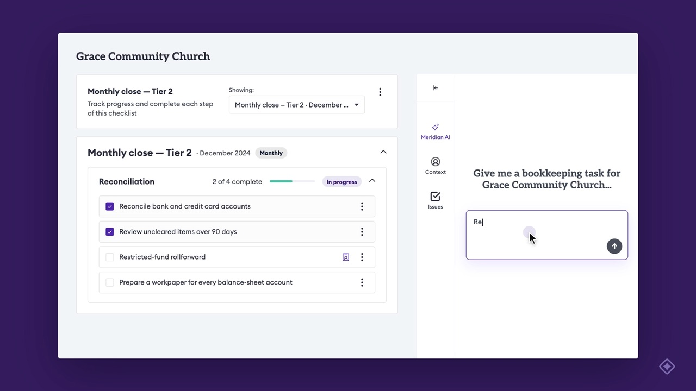
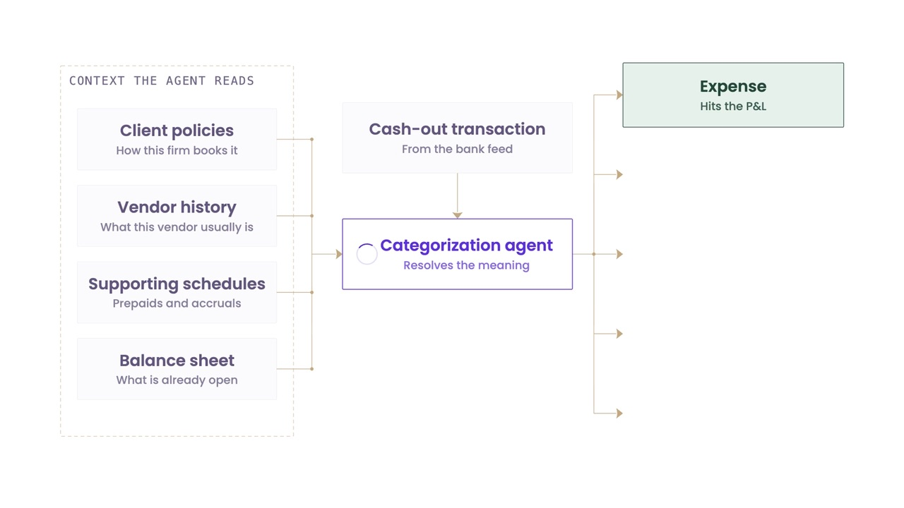

Videos, charts and product screens for Meridian marketing, one collection per feature. Open a collection to preview and download its files.

Building a close checklist, assigning it to a client, adding client-level steps, and using it with Meridian AI.

How the categorization agent reads a transaction and books it, with the vendor categorization walkthrough.